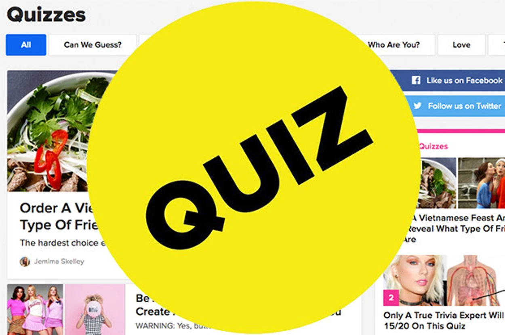

Learning Journal_
DES 157A | FALL 2026
Best Practices for Form Design
Forms are an essential part of the user experience and appear in many different ways, from logging into an app and signing up for an account to completing quizzes. That is why getting a form’s UX right is critical so that it is simple to understand and easy to fill in. The article “Best practices for form design” written by Salim Ansari provides 20 best practices to boost a form’s usability. This learning journal contains what I learned from the article and my thoughts on it.
Out of the 20 best practices, one of the most useful practices that designers may overlook is providing matching keyboards. It makes it so much easier for users to input forms and prevents users from entering incorrect characters. Another important practice is providing form feedback. Providing a successful submission feedback will prevent users from second guessing whether their form went through and can help prevent duplicate form submission. Providing negative feedback, such as error messages, immediately is also helpful. I feel like giving error feedback after the user has completed everything wastes their time and can make their experience frustrating.
Form Example

One form that I think demonstrates good form design is BuzzFeed quizzes. The forms are fun and easy to follow. There are pictures alongside each answer choice. Once you select an option, there is instant visual feedback with the non-selected choices blurred and the selected choice highlighted. When you are done, there is feedback with confetti letting you know you completed the quiz and an option to retake the quiz again.
Overall, a form might seem simple enough to design since it is just boxes and instructions, but there are small nuances that can make the user experience either more positive or negative. Keeping these small details in mind can help designers create forms that are not only functional but also accessible and more enjoyable for users to complete.